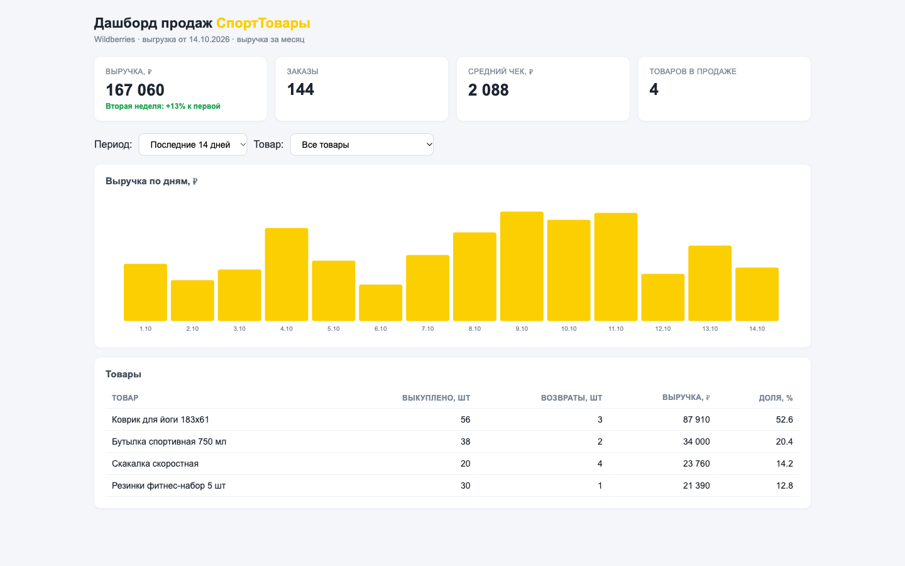

Красивый код — проверяем цифрами
Нейросеть собирает проект быстро, но быстро — не значит верно. Проверяю по-взрослому: сверка с первоисточником, живые прогоны, история гита. Ниже три кейса — каждый можно открыть и перепроверить руками.
Все три проекта — учебные разборы по мотивам реальных ТЗ с биржи: данные вымышленные, а ошибки, метод и правки настоящие. В каждом кейсе лежат обе версии — сломанная и исправленная, отчёт по находкам и команды, чтобы воспроизвести проверку самому. Полный код: GitHub · vibe-code-checks.
Числа в дашборде не сходятся
Вайбкод-дашборд селлера Wildberries: выглядит хорошо, ничего не падает — а решения принимаются по цифрам, которых нет.

- Возвраты прибавлялись к выручке — разница 21 640 ₽ на двух неделях: кабинет хранит возвраты с плюсом, код складывал их как выкуп.
- Штуки выдавались за заказы: на плитке «144 заказа», на деле — 144 проданных штуки в 73 заказах; из-за этого и средний чек врал.
- Плитки не пересчитывались в фильтрах: график менялся, выручка оставалась за весь период.
- После правки все 5 показателей сверены с выгрузкой независимым пересчётом — 5 из 5 совпали.
Парсер падает ночью
Парсер цен конкурента умирал по ночам и оставлял пустой CSV. Хуже падения — то, что собранное затиралось само.
- Ответ «429» или «500» валил весь сбор: код не проверяет код ответа и падает на
resp.json(). - Файл результата открывался на перезапись в начале — утренний CSV был пуст не потому, что «не собрали», а потому что собрали и стёрли.
- Запросы без таймаута и без пауз: зависший источник подвешивал процесс, сплошная пачка запросов сама вызывала лимиты.
- После правки: повторы с паузой, таймаут, товар без цены пропускается с записью в лог, результат пишется атомарно (временный файл + подмена).
Ключи в коде и .env
Мёртвые Telegram-боты заказчика. Причина нашлась не в коде ботов, а рядом: все ключи лежали в открытом репозитории.
- Токен бота и ключ магазина — в коде, в
.envи в истории гита; «удалю .env и запушу заново» не помогает, история хранит файлы навсегда. - Бот печатал все ключи в лог при каждом старте — тихий канал утечки в серверы и скриншоты техподдержки.
- Проверка воспроизводится за 2–3 минуты командами из README:
git show, скан истории, запуск бота. - Ремонт начинается не с кода, а с перевыпуска ключей; в проекте — план перевыпуска и
.gitignoreс.env.example.
Как проходит проверка
Одна и та же процедура для любого вайбкод-проекта — дашборда, бота, парсера, сайта.
- Сверка с первоисточником. Цифры дашборда — против выгрузки кабинета, посчитанной независимо другим инструментом. Расхождение видно сразу, а не по одному подозрению.
- Чтение кода по находкам. По каждой неверной цифре и точке сбоя: как считается и откуда берётся.
- Живые прогоны «до/после». Поведение обеих версий на одних и тех же входных данных — фильтры, сбои источника, запуск бота, история гита.
- Отчёт владельцу. Находки по приоритетам (критично / важно / мелочи), таблица «до/после», что исправлено, как самому заметить такое.
Проверю ваш вайб-проект
Дашборд, бот, парсер, сайт — собранные нейросетью. Обычный срок проверки — 1–2 дня, отчёт с находками и версиями до/после.